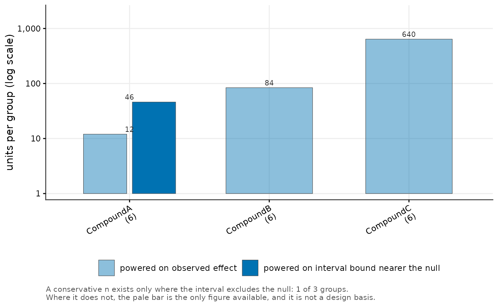

Draws, per group, the number of units a confirmatory study would need when powered on the observed effect beside the number needed when powered on the confidence bound nearer the null.
Usage
cr_plot_sample_size(
sizes,
label = NULL,
observed = "n_observed",
conservative = "n_conservative",
available = NULL,
colour_by = NULL,
log_y = TRUE,
title = NULL,
subtitle = NULL,
caption = NULL,
x_lab = NA,
y_lab = NULL
)Arguments
- sizes
A data frame with one row per group, carrying the two sample-size columns.
- label
Name of the grouping column.
NULL(default) picks the first ofgroup,compound,treatmentorlabelthat is present.- observed, conservative
Names of the two sample-size columns.
- available
Optional name of a column giving the units already available per group; folded into the axis labels in brackets.
- colour_by
Column mapped to fill, or
NULLfor a single colour.- log_y
Draw the count axis on a log scale (default
TRUE, because the two bars routinely differ by an order of magnitude).- title, subtitle, caption, x_lab, y_lab
Plot labels.
NULLuses a computed default;NAomits the label.
Details
The gap between the two bars is the point of the figure. Powering on the observed effect of a screen's top hit is circular - that group is the largest only because it was selected for being largest - so the conservative bar is the one a confirmatory design should be built on, and a conservative figure exists only where the interval excludes the null.
Value labels are drawn in ink above the bars, never inside them, and the number of units already available is folded into the axis label rather than plotted as a marker that collides with the labels on short bars.
See also
Other screen figures:
cr_plot_forest(),
cr_plot_qc_gate(),
cr_plot_screen(),
cr_plot_specificity(),
cr_save_plot()
Examples
sizes <- data.frame(
group = c("CompoundA", "CompoundB", "CompoundC"),
n_observed = c(12, 84, 640),
n_conservative = c(46, NA, NA),
n_available = c(6, 6, 6)
)
cr_plot_sample_size(sizes, available = "n_available")
